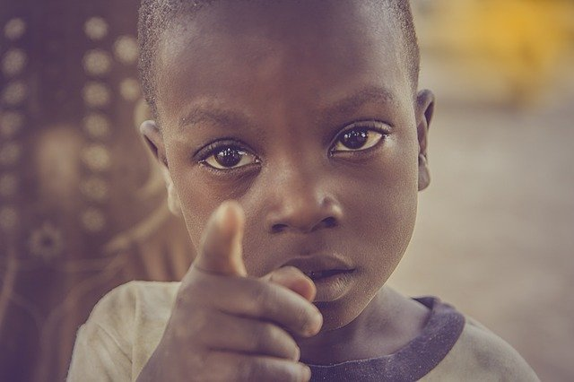

Hunger in Nigeria
Nigerian people are going hungry. So they suffer from malnourishment. Kids and adults have no drinking water. And the water is not clean if they manage to get a little.


Nigerian people are going hungry. So they suffer from malnourishment. Kids and adults have no drinking water. And the water is not clean if they manage to get a little.
The people in Nigeria have no shelter. No place to go or call home. They live in tents, which is not shelter at all. They all of bunch up in tent villages.
Nigerians do not have any clean drinking water. Their water is dark brown and have bugs in it. The people get sick from drinking it.
People in Nigeria are going hungry. They can't get any food. Kids are suffering from malnourishment.
Since the people in Nigeria have drinking unclean water, they get waterborne diseases. They can't get the medical help they need to get better. Leaving alot of the kids near dealth or dying.